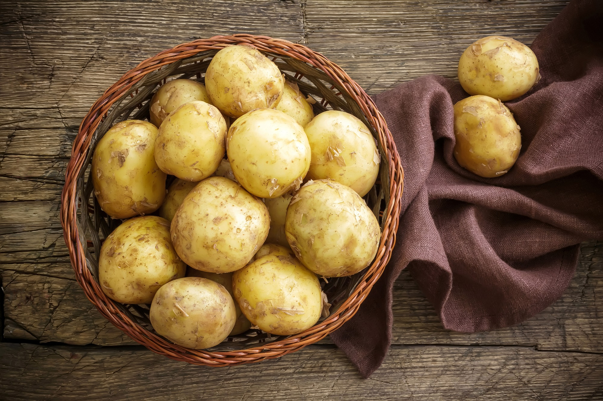

Peruna on koisokasvien (Solanaceae) heimoon kuuluva kasvi,
jonka mukulaa käytetään ravintona. Peruna on yksi eniten käytetyistä ravintokasveista
Euroopassa sekä Etelä- ja Pohjois-Amerikassa. Peruna kuuluu niiden yhdeksän viljelykasvin joukkoon,
joiden avulla tuotetaan 75 prosenttia ihmisravinnosta.
